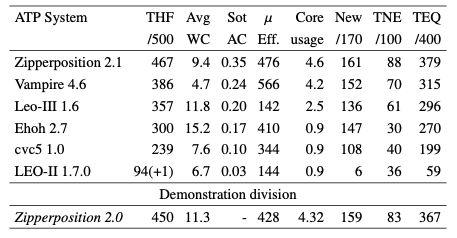

Typed Higher-order Form Results

Salient Systems
- Zipperposition 2.1 dominated
- New calculus features, heuristics
- Ehoh a new system, built on E
- Consistent output of proofs
- Satallax tested, solved 336
Performance Measures
- Leo-III had lower efficiency due to startup time
- Vampire had higher efficiency due to low times
- Zipperposition and Vampire used the most cores
Portfolio Possibilities
- 16 problems unsolved, 39 all solved
- 42 unique solutions, 31 by Zipperposition
- Portfolio would not help much